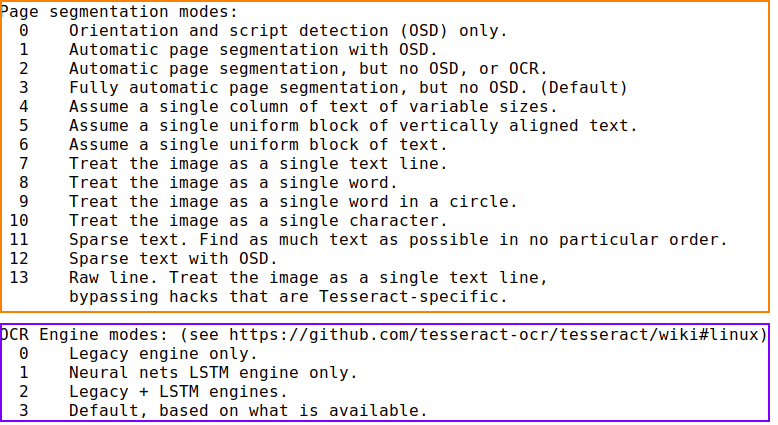

Tesseract (OCR text in images)
Github:
https://github.com/tesseract-ocr/tesseract
root@kali:/# apt install tesseract-ocr
Tesseract is a command-line tool and OCR (Optical Character Recognition) engine that understands
100+ languages and leverages machine learning to identify text contained in images.
Tesseract was originally
developed by HP, but since 2006 has been actively developed and greatly expanded by Google
root@kali:/# tesseract important.png stdout | egrep -v '^$'
OPTIONS(
https://github.com/tesseract-ocr/tesseract/blob/master/include/tesseract/publictypes.h):
 The best options tested are:
--psm 11 → PSM_SPARSE_TEXT = 11 → Find
as much text as possible in no particular order.
--psm12 → PSM_SPARSE_TEXT_OSD = 12 → Sparse text with
orientation and script det.
Build a wordlist from text contained in images
root@kali:/# for x in *.jpg; do tesseract $x stdout -psm 11 -l eng >>tesser.out; done
Output cleanup steps (optional):
◇ Remove blank lines: $ egrep -v '^$'
◇ One
"word" per line: $ fmt -1
◇ Require at least 4 ASCII printable: $ strings -n4
◇ Require at
least one alpha: $ egrep -i [a-z]
◇ Unique entries only: $ sort -u